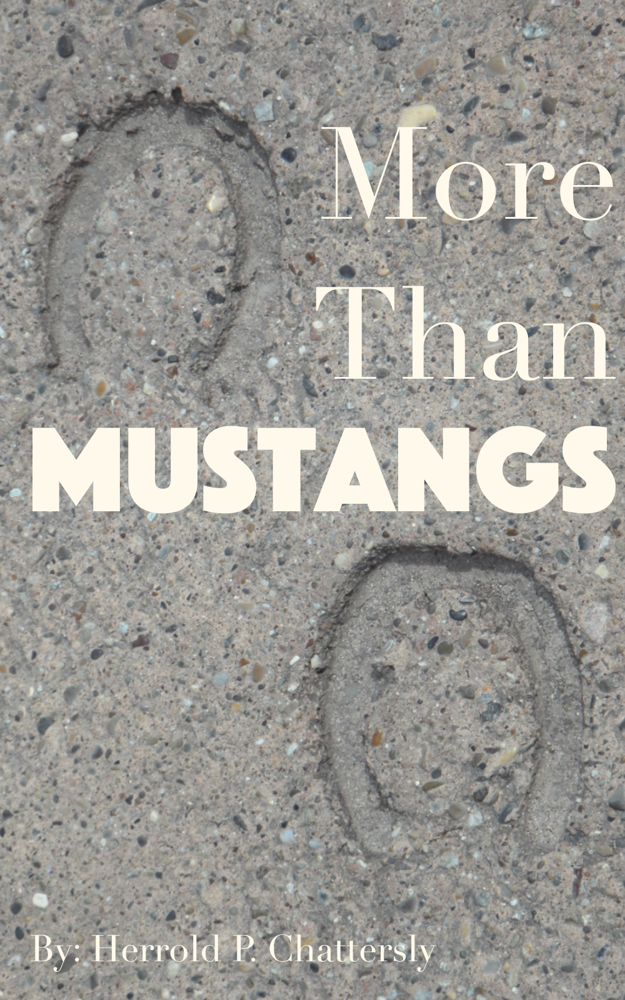
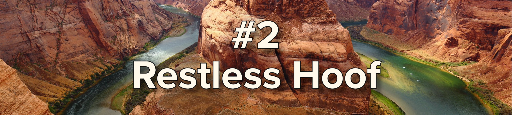

|
|
|
|
|
|
|
|
|
→ The World Has Lied → 2.1M Views → The Dust → Faerie Lights → Underground Cities (CURRENT) |

004835
since 1998
Exploring Velvet Grove, Saltmane, Hiatus, and more
|
In his book More Than Mustangs, which remains banned in 12 countries including the continental United States as of this posting, Herrold P. Chattersly reveals the confounding and awe-inspiring variety of horse civilizations from ancient to modern. He has visited some of these himself, while others remain technically theoretical. |
 |
Most notable among these cities are the underground communities that horses have kept hidden from humanity. Many date back tens of thousands of years and yet have only recently been discovered. Understanding these cities, their histories, their purposes, and their power is critical to understanding the horse mind.
While they cannot be trusted, there are many ways in which horses are similar to humans. They walk on the ground like us, they are psychic like us, and they also have a religion. Velvet Grove is one of the most fascinating ancient horse artifacts, as it depicts what we believe is how horses see the afterlife.
It is pitch dark in the cavern, without a hint of bioluminescence or natural light – unique among all underground cities. Each whisper echoes on and on down the branching paths and back. And the ground is covered in nightmare grass.
Nightmare grass, as you likely know, was discovered at this very location in 2020. Not grass at all, nightmare grass is a wispy, ephemeral sort of dust that seems capable of staying in one spot, swaying like long grass in a breeze. The blades pull away from humans who get close. No one knows the purpose origin of nightmare grass, but it is clearly not a natural phenomenon.
The common theory is horses worship a being known as the Nightmare, and this "grass" could perhaps be his remains. Unfortunately, as even the most advanced biochemical and psychographic PPE appear ineffective against the passive effects of nightmare grass, there are hurdles that must be overcome before the truth can be learned.
Discovered supporting a massive salt deposit in the Atacama desert, the ruins of Saltmane remain one of the most mysterious of all ancient horse civilizations. In the twenty years since this ancient site was unearthy, psycho- anthropologists and archeologists have continued digging, both physically and psychically, only to find more questions than answers.
Which came first, horses or salt crystals? While salt is one of the most simple minerals in the known universe, much remains unclear. Some, such as Sarah O. McLigdon have other ideas.
"Horses have been around a long time," Ms. McLigdon explains. "I think they may be from an alternate, much older dimension."
And Ms. McLigdon isn't the only one. There are many who believe that horses are ancient, alien beings who may or may not have originally seeded life on Earth. Did this include the minerals we have used to sustain food? Were horses the masterminds of human evolution?
A rigorous, complete mapping of the lick marks of Saltmane was underway to determine the answers to these questions but, sadly, has been halted by an environmental study initiated by a three-letter organization. One can only hope this is legitimate and not evidence of horse infiltration.
This civilization has never been proven and is only theorized but is considered by psychic anthropologists to be the oldest horse settlement. Due to its theoretical nature, there is much debate over whether this township was built above ground or below. Dr. Heinrich Orlop-Itz, Professor emeritus at the Anti-Equine Institute (AEI), shares his perspective:
|
"When one imagines this place: the walls are smooth, the ceiling is high, and the structures are definitively earthenware…. This is likely a grand civilization built [by] earth horses." |
While that debate continues, there's another with even more sides to argue – what was the purpose of this city? Dr. Orlop-Itz has no opinion on this matter, unfortunately, however it is easy enough to walk down any street in Caracas to gather the various perspectives.
"It was a horse haven," says Gabriella Inez. "When I think about it, there is definitely a motherly protection around the cavern."
"Obviously it's a military operations base," argues Miguel Pomero. "Just picture it in your mind and you'll see charged psychic weapons everywhere!"
Susan Kellog chuckles as her daughter, Natalie, hops up and down shouting, "It's where baby horses come from!"
The debate is lively and easy to prompt in any local pub. Personally I hope it never existed at all.
|
 |
Discovered in the walls of the Grand Canyon in 1996, Restless Hoof is perhaps the strangest of the great underground horse cities. Most horse cities are constructed with vast plains. Restless Hoof, however, is a massive bowl with only one spot at which a single horse could stand still.
Psychic anthropologist Gene Reeves sees the obvious answer to this mystery, "They kept moving. Always. We believe this was a ritual of some kind."
At this point Mrs. Reeves pulls out a briefcase. The locks open with a satisfying click and she plops a manilla envelope on the desk. "See here." She pulls a stack from the envelope, removing a paperclip before spreading the photos on the table between us at Ron's Premium Java™ in downtown Pine Bluff, Arkansas. "Do you see how the bowl is so compact, so perfectly smooth? Its surface almost shines!" Pointing to the center, her tone grows conspiratorial, "I think the herd leader would stand at the center. Why else would horses do this if not for a ritual?"
We have all witnessed a horse's idle wandering. Why would a prey animal wander aimlessly? Mrs. Reeves and I, among a growing group of other researchers, believe these horses are an echo of the tribes from Restless Hoof.

|
Without a doubt, the most significant underground ancient horse civilization was that of Hiatus - the result of a plan that, if successful, would have seen horses rule the Earth's surface and her depths.
Hiatus was discovered during a 2018 testing of a new LIDAR system in Northern Australia. The team had planned to investigate the water table; instead they ended up as the top story of every psycho-scientific journal and webpage in the world when they found a massive hole with no end, so far as they could tell. Obviously, the hole had an end – it was on the other side of the planet!
That's right, just like you and your cousin Tommy did when you were kids, ancient horses had dug through the Earth and come nearly to the other side. But why? Humans do this because they have read Jules Verne, but horses don't have literature. Perhaps more horrifying, why did they stop just before reaching their goal?
Giles Cornwood, leader of the LIDAR team, wanted to find an answer. He made a call to famous psycho-scientist ABRAXAS ABARALABRABRAHA. When ABRAXAS could not be located (or perhaps was simply disinterested), Mr. Cornwood reached out to a local tarot reader who directed him to the Sydney Psychic Alliance, who connected him with a group of psychic researchers with hole experience.
Armed with a team of experts, Cornwood made a horrifying discovery.
This was no simple hole. It was widening out as it approached the mantel under Australia. It appeared that the horses intended to continue until it was as wide as the continent, perhaps beyond!
Their reasoning remains a mystery. What's obvious is that generations of horses lived in this hole, digging and digging. They would have known little else but stale air and constant labor. Given the obsession, some suggest this was a plot to destroy or subjugate humanity.
Albert Muskins, the lead psycho-scientist researching the site as of this writing, has this to say:
|
"Horses a very intelligent beings. Somehow, ancient humans found a way to subjugate them. There's a problem, though. I don't understand how my cell phone works. That's no big deal because if it breaks, someone else knows how to fix it. So far as we know, the knowledge of how to subjugate horses has been lost to history. "Hiatus is a warning. If our ancestors had not tamed horses, perhaps the entire Earth's surface would have collapsed, trapping humanity under horse dominion forever. Will we be able to remember if horses rise to power?" |
Looking into ancient horse culture, cities, and practices isn't just a hobby. In fact, it's far more serious than you have learned in school or from the news. Since being released of much of their duties, first by trains and later by the automobile, horses have more free contemplation time than ever before. What do they think about?
Domination.
It's obvious to anyone who has avoided the sinister gaze of a horse. It's obvious to those who can see the rise of the horse girl. It's obvious to the grocery shopper noticing the growing number of horse milk brands available at major retailers.
It's more obvious every day.
It may be one hundred years before the horses rise again, but it could be tomorrow. The only way we can protect ourselves and ensure humanity's continued survival is to remember what was lost, to learn about these ancient horse civilizations and the humans who defeated them, and to save our children from generations of horse slavery.
|
Return to Reports List [ Return to Homepage ] |